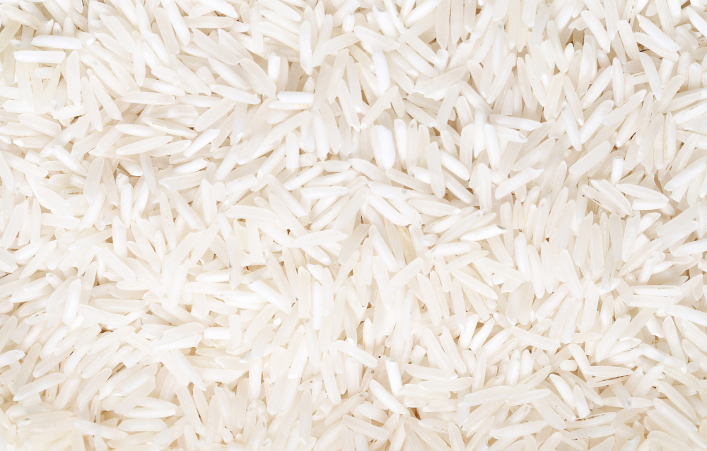
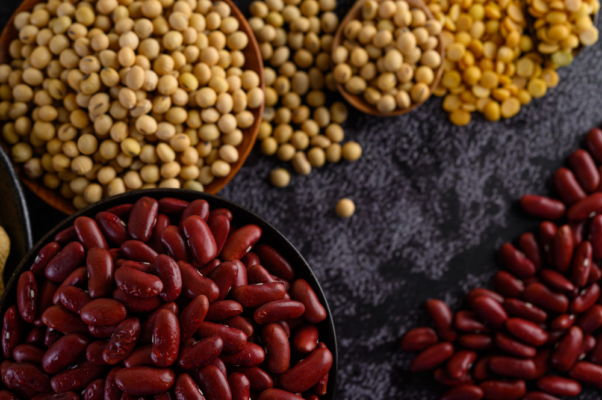
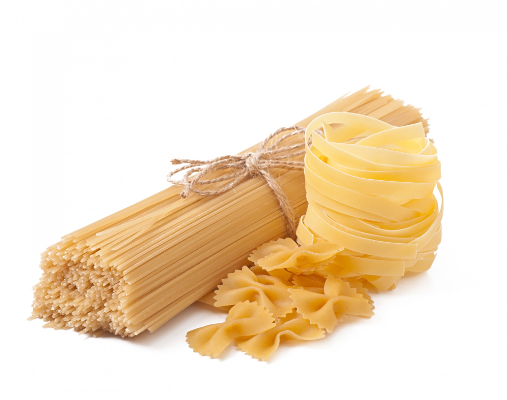
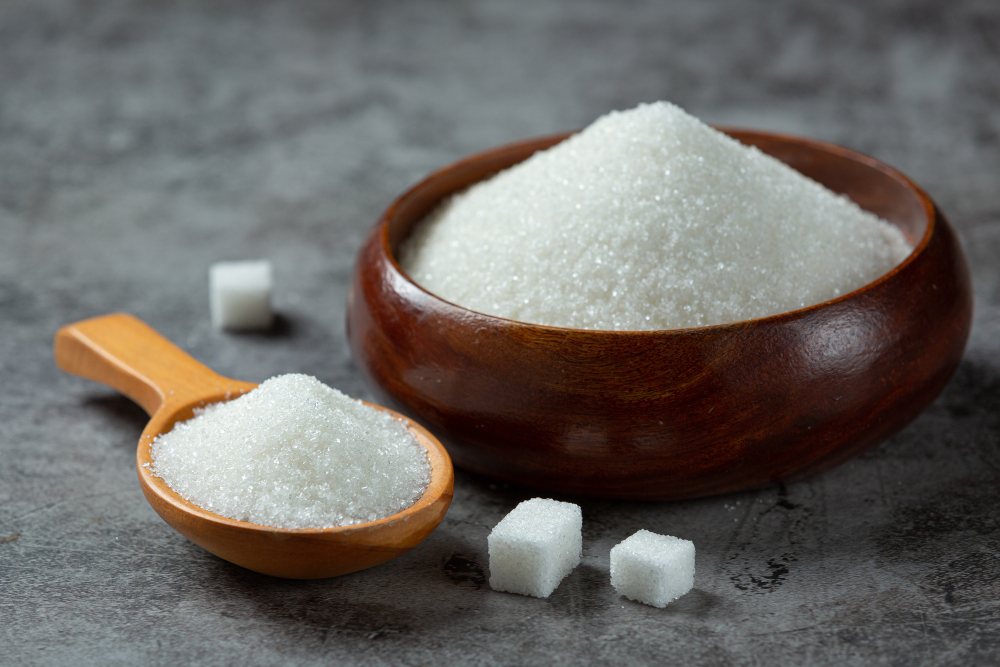
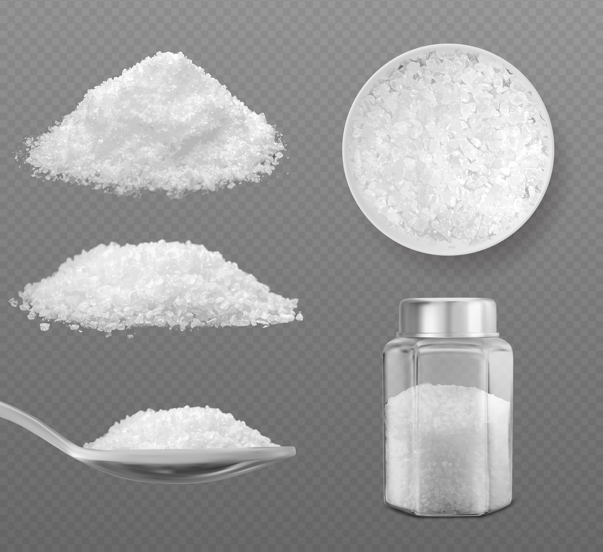

Ajude a combater a fome
Sua doação pode fazer a diferença na vida de muitas pessoas. Contribua com alimentos não perecíveis e ajude a alimentar famílias necessitadas.

Arroz
Um dos alimentos mais consumidos no mundo, essencial em qualquer cesta básica.

Feijão
Rico em proteínas e fibras, é um complemento perfeito para o arroz.

Macarrão
Fácil de preparar e muito nutritivo, pode ser servido com diversos molhos.

Açúcar
Essencial para adoçar bebidas e preparar sobremesas.

Sal
O principal tempero da culinária, indispensável em qualquer cozinha.

Óleo de Cozinha
Utilizado para cozinhar e preparar diversas receitas.